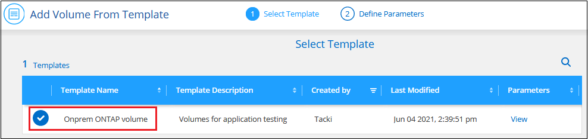
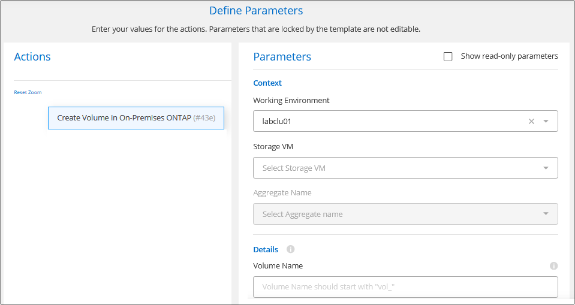

版本資訊
版本資訊
管理使用 Connector 探索到的叢集
 建議變更
建議變更
如果您使用 Connector 發現內部部署 ONTAP 叢集、則可以從標準檢視建立磁碟區、從進階檢視使用系統管理員、以及啟用 BlueXP 資料服務。
在畫版上、使用Connector探索到的叢集工作環境圖示應類似下列內容：

如果直接探索到工作環境、工作環境圖示會顯示「Direct（直接）」一詞。
從「標準」檢視建立 FlexVol Volume
在您使用 Connector 從 BlueXP 探索內部部署 ONTAP 叢集之後、您可以開啟工作環境來配置和管理 FlexVol Volume 。
建立磁碟區
BlueXP可讓您在現有的Aggregate上建立NFS或CIFS磁碟區。您無法ONTAP 從BlueXP標準檢視在內部的叢集上建立新的Aggregate。您需要使用「進階」檢視來建立Aggregate。
稱為「範本」的BlueXP功能可讓您建立專為特定應用程式（例如資料庫或串流服務）工作負載需求最佳化的磁碟區。如果您的組織已建立您應該使用的Volume範本、請遵循 這些步驟。
-
從導覽功能表中、選取*儲存設備> Canvas*。
-
在「畫布」頁面上、選取您要在其中配置磁碟區的內部部署 ONTAP 叢集。
-
選取 * Volume > Add Volume * 。
-
依照精靈中的步驟建立磁碟區。
-
詳細資料、保護及標記：輸入磁碟區的詳細資料、例如磁碟區名稱和大小、選擇Snapshot原則、並視需要指定磁碟區標記。
此頁面上的部分欄位是不知自明的。下列清單說明您可能需要指引的欄位：
欄位 說明 尺寸
您可以輸入的最大大小、主要取決於您是否啟用精簡配置、這可讓您建立比目前可用實體儲存容量更大的磁碟區。
Snapshot 原則
Snapshot 複製原則會指定自動建立的 NetApp Snapshot 複本的頻率和數量。NetApp Snapshot 複本是一種不影響效能的時間點檔案系統映像、需要最少的儲存容量。您可以選擇預設原則或無。您可以針對暫時性資料選擇「無」：例如、 Microsoft SQL Server 的 Tempdb 。
-
傳輸協定：選擇磁碟區的傳輸協定（NFS、CIFS或iSCSI）、然後設定磁碟區的存取控制或權限。
如果您選擇CIFS、但伺服器尚未設定、則BlueXP會提示您使用Active Directory或工作群組來設定CIFS伺服器。
下列清單說明您可能需要指引的欄位：
欄位 說明 存取控制
NFS匯出原則會定義子網路中可存取磁碟區的用戶端。根據預設、BlueXP會輸入一個值、以供存取子網路中的所有執行個體。
權限與使用者/群組
這些欄位可讓您控制使用者和群組存取SMB共用區的層級（也稱為存取控制清單或ACL）。您可以指定本機或網域 Windows 使用者或群組、或 UNIX 使用者或群組。如果您指定網域 Windows 使用者名稱、則必須使用網域 \ 使用者名稱格式來包含使用者的網域。
-
使用率設定檔：選擇是否啟用或停用磁碟區上的儲存效率功能、以減少所需的儲存總容量。
-
* 審查 * ：檢閱有關 Volume 的詳細資料、然後選取 * 新增 * 。
-
從範本建立磁碟區
如果貴組織已建立內部部署ONTAP 的支援範本、以便部署針對特定應用程式工作負載需求最佳化的磁碟區、請依照本節中的步驟進行。
此範本應可讓您的工作更輕鬆、因為範本中已定義了某些磁碟區參數、例如磁碟類型、大小、傳輸協定、快照原則等。當參數已預先定義時、您只需跳至下一個Volume參數即可。

|
使用範本時、您只能建立NFS或CIFS磁碟區。 |
-
在「畫布」頁面上、選取您要在其中配置磁碟區的內部部署 ONTAP 叢集。
-
選取
 >*從範本新增Volume *。
>*從範本新增Volume *。
-
在 _ 選取範本 _ 頁面中、選取您要用來建立磁碟區的範本、然後選取 * 下一步 * 。

此時會顯示「定義參數_」頁面。

-
注意： * 如果您想查看這些參數的值、您可以選取核取方塊 * 顯示唯讀參數 * 來顯示範本鎖定的所有欄位。根據預設、這些預先定義的欄位會隱藏、只會顯示您需要填寫的欄位。
-
-
在_context_區域中、工作環境會填入您剛開始使用的工作環境名稱。您需要選擇要在其中建立磁碟區的*儲存VM*和* Aggregate *。
-
新增所有非模板硬編碼的參數值。
-
定義此 Volume 所需的所有參數之後、請選取 * 執行範本 * 。
BlueXP會配置磁碟區並顯示頁面、以便您查看進度。

然後新磁碟區便會新增至工作環境。
此外、如果範本中實作任何次要動作、例如在磁碟區上啟用 BlueXP 備份與還原、則也會執行該動作。
如果您已配置 CIFS 共用區、請授予使用者或群組檔案和資料夾的權限、並確認這些使用者可以存取共用區並建立檔案。
建立FlexGroup 功能區
您可以使用 BlueXP API 來建立 FlexGroup Volume 。支援垂直擴充的功能是提供高效能及自動負載分配的功能。FlexGroup
使用進階檢視（系統管理員）管理 ONTAP
如果您需要對內部部署ONTAP 的故障叢集執行進階管理、您可以使用ONTAP 支援ONTAP 此功能的支援功能、這個管理介面是隨附於一個故障診斷系統的。我們已將System Manager介面直接納入BlueXP、因此您不需要離開BlueXP進行進階管理。
此「進階檢視」可作為預覽使用。我們計畫改善這項體驗、並在即將推出的版本中加入增強功能。請使用產品內建聊天功能、向我們傳送意見反應。
功能
BlueXP的進階檢視可讓您存取其他管理功能：
-
進階儲存管理
管理一致性群組、共用區、qtree、配額和儲存VM。
-
網路管理
管理IPspace、網路介面、連接埠集和乙太網路連接埠。
-
活動與工作
檢視事件記錄、系統警示、工作和稽核記錄。
-
進階資料保護
保護儲存VM、LUN及一致性群組。
-
主機管理
設定SAN啟動器群組和NFS用戶端。
支援的組態
透過System Manager的進階管理功能、可透過ONTAP 內部部署的支援執行9.10.0或更新版本的叢集來支援。
不支援在GovCloud區域或沒有外傳網際網路存取的區域整合System Manager。
使用進階檢視
開啟內部部署的 ONTAP 工作環境、然後選取「進階檢視」選項。
-
在「畫布」頁面上、選取您要在其中配置磁碟區的內部部署 ONTAP 叢集。
-
在右上角、選取 * 切換至進階檢視 * 。

-
如果出現確認訊息、請仔細閱讀並選擇 * 關閉 * 。
-
使用System Manager來管理ONTAP 功能。
-
如有需要、請選取 * 切換至標準檢視 * 、以透過 BlueXP 返回標準管理。

取得System Manager的協助
如果您需要協助、請ONTAP 參閱《System Manager with》（搭配使用系統管理程式） "本文檔 ONTAP" 以取得逐步指示。以下是幾個可能有幫助的連結：
啟用 BlueXP 服務
在您的工作環境中啟用 BlueXP 資料服務、以複寫資料、備份資料、層級資料等。
- 複寫資料
-
在 Cloud Volumes ONTAP 系統、適用於 ONTAP 檔案系統的 Amazon FSX 和 ONTAP 叢集之間複寫資料。選擇一次性資料複寫、可協助您在雲端之間移動資料、或是週期性排程、有助於災難恢復或長期資料保留。
- 備份資料
-
將內部部署 ONTAP 系統的資料備份到雲端的低成本物件儲存設備。
- 掃描、對應及分類您的資料
-
掃描公司內部部署叢集以對應及分類資料、並識別私有資訊。這有助於降低安全性與法規遵循風險、降低儲存成本、並協助您執行資料移轉專案。
- 將資料分層至雲端
-
自動將非作用中的資料從 ONTAP 叢集分層至物件式儲存設備、將資料中心延伸至雲端。
- 維持健全狀況、正常運作時間和效能
-
在發生中斷或故障之前、實作 ONTAP 叢集的建議修正。
- 識別容量不足的叢集
-
識別容量偏低的叢集、檢閱叢集以瞭解目前和預測的容量等等。